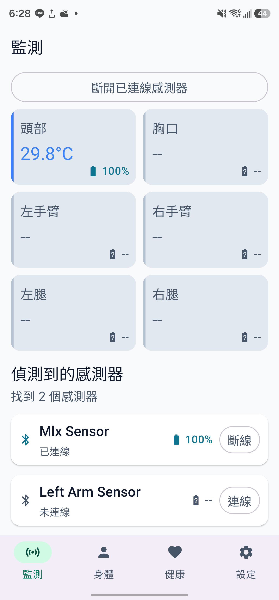
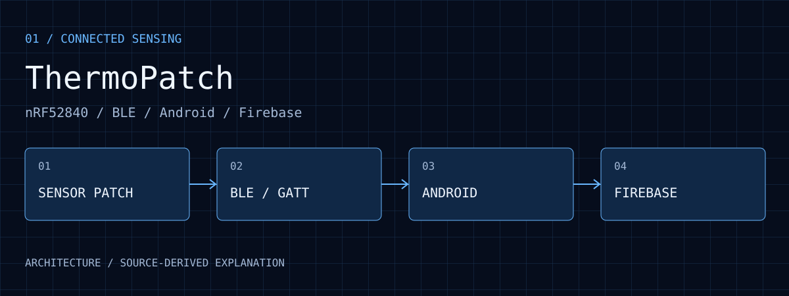

公開實作
可閱讀掃描、通知、部位資料、電量及 DFU 的 App 程式碼與操作流程。
01 / EVIDENCE

2026 年 7 月保存的 ThermoPatch Android 畫面：六個部位欄位中，頭部欄位顯示 29.8 °C，其餘為尚無讀值的「--」；下方分開呈現已連線與未連線的感測器。這張截圖說明資料與連線狀態的呈現方式，不代表六裝置同時完成量測，也不是溫度校正或 v1.0.1 測試的證據。
查看原圖 ↗可閱讀掃描、通知、部位資料、電量及 DFU 的 App 程式碼與操作流程。
repository 保存 v1.0.1 單元測試摘要：1 個測試、0 失敗。這份摘要不能證明 BLE 多裝置、實機 DFU 或溫度準確度。
連線穩定度、感測校正、斷線恢復、更新中斷和長時間記錄，需要指定手機、韌體與裝置條件的測試。
02 / WALKTHROUGH
BluetoothViewModel 處理掃描、GATT 連線與通知；DeviceViewModel 管理裝置與部位對應。藍牙通知的數值必須連同來源裝置處理，才能知道它屬於頭部、胸部或四肢。
Compose 畫面呈現各部位溫度及裝置狀態。歷史截圖中的頭部為 29.8 °C，其餘部位為 --；這是當時的介面紀錄，缺值不能解讀成 0 °C，也不能推論所有感測器都在連線。
Firebase 負責資料彙整，韌體更新則由 MyDfuService 與 Nordic DFU callback 處理。選擇 ZIP 與目標裝置是另一條操作流程，不能因為能接收溫度就認定更新已驗證成功。
這個專案的重點是跨裝置資料管理，不只是顯示一個溫度。公開頁對應舊版 nRF52840 Android 專案，不混用後續 ThermoPatchV2／nRF54 的功能或測試結果。
03 / PURPOSE
多部位量測需要同時處理裝置身分、部位對應、連線狀態和更新目標。ThermoPatch 將這些操作集中在 Android App，讓使用者能從同一個介面連接裝置、觀察讀值並選擇要更新的貼片。
04 / ARCHITECTURE

nRF52840 配套韌體提供溫度、Battery Service 與 DFU。
BluetoothViewModel 管理 GATT，DeviceViewModel 對應裝置與身體部位。
Compose 將數值、電量與連線狀態呈現在六個身體位置。
Firebase 保存聚合資料，設定頁另外選擇 DFU 檔案與目標。
05 / WORKFLOW
配套 nRF52840 韌體透過自訂溫度服務、標準 Battery Service 與 Nordic DFU 提供資料及更新介面。公開 repository 主要保存 Android App，韌體另行維護。
BluetoothViewModel 管理掃描、GATT 連線與通知；DeviceViewModel 將資料轉為裝置狀態與身體部位讀值，提供頭、胸、左右手臂及左右腿六個顯示位置。
Jetpack Compose 顯示讀值、電量與充電狀態，聚合資料後串接 Firebase Realtime Database。連線、顯示與雲端保存是不同階段，應分別確認。
在設定頁選擇連線裝置與 DFU ZIP，再由 MyDfuService 與 Nordic 回呼呈現進度。明確選擇目標可降低多裝置情境下更新錯誤對象的風險。
06 / DECISIONS
畫面需要回答量測來自哪個部位，BLE 層則管理實際連線。兩者分開有助於追蹤裝置替換與斷線。
將檔案、目標和進度集中在設定頁，讓日常監看不與維護操作混雜。
本頁說明公開 nRF52840 App；後續 V2 的 Room、待傳佇列與多裝置同步研究不視為此版本已具備的功能。
07 / ANALYSIS
多部位畫面需要明確知道讀值來自哪個貼片。更換、斷線與重新連接時，部位對應比單純收到溫度值更重要。
v1.0.1 的一項單元測試支持該測例的軟體行為；37 項 lint warnings 亦需連同版本閱讀，並不構成手機與貼片的完整接受測試。
多裝置同時連線時，韌體維護必須能辨識檔案與裝置的對應，更新進度也應與日常感測狀態分開呈現。
08 / REPRODUCE
09 / LIMITS
這是研究型感測整合專案；六個顯示位置不代表六台裝置並行可靠度已通過驗證，也不代表具備臨床用途或醫療量測精度。
10 / SOURCES
入選圖像保留原始畫面內容，圖說分別註明原型照片、操作介面、歷史紀錄、分析輸出或模擬。